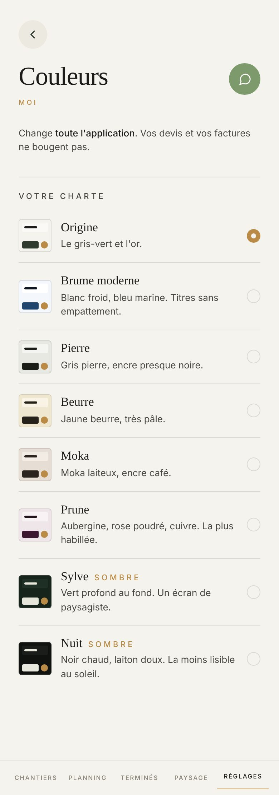

Proposé
Aujourd'hui

Ce qui change
- Les huit chartes en deux colonnes, chacune avec un vrai petit écran au lieu d'une vignette de 46 px : le fond, le titre dans sa police, une carte, le bouton, la barre et son trait d'or.
- Touchez une charte : le téléphone entier se repeint tout de suite, la barre du bas comprise.
- La phrase du haut porte une feuille blanche en miniature : elle reste blanche quand tout le reste change, c'est ce que dit la phrase.
- « Sombre » s'écrit en toutes lettres avec une petite lune, au lieu de capitales espacées.
- La charte prise est cernée, avec sa pastille d'or. Plus de « MOI » doré sous le titre.
Ce qui ne bouge pas
- Les huit noms et leurs phrases, mot pour mot, dans le même ordre. Origine reste la charte de départ.
- Le sombre est dans la liste, pas à côté : Nuit et Sylve.
- La phrase « Change toute l'application. Vos devis et vos factures ne bougent pas. »
- Ce que reçoivent vos clients garde l'allure d'Origine, quelle que soit votre charte.